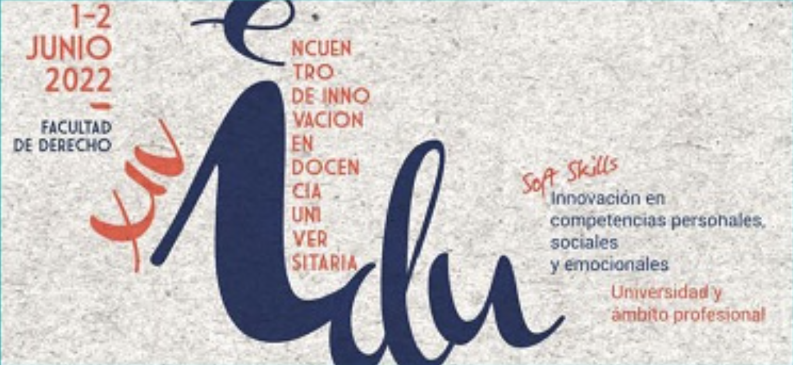

GRAPSHY
GRAPSHY, Georgetown University — February 13th, 2026
De Lucas Barquero, P. 2026. Measuring L2 Speech Fluency in Study Abroad.
View event →
GRAPSHY, Georgetown University — February 13th, 2026
De Lucas Barquero, P. 2026. Measuring L2 Speech Fluency in Study Abroad.
View event →Auburn University – May 5th, 2023
De Lucas Barquero, P. “La colonización de lo imaginario. Sociedades indígenas y occidentalización en el México español. Siglos XVI-XVIII” by Serge Gruzinsky [Book review in English].

University of Alcalá, Spain – June 1st & 2nd, 2022
Fernández López, M.ª C., de las Fuentes Gutiérrez, E., de Lucas Barquero, P. & Vera Díaz, P. La incorporación de las soft skills a la formación del docente de español para inmigrantes: propuestas y resoluciones didácticas.
View event →